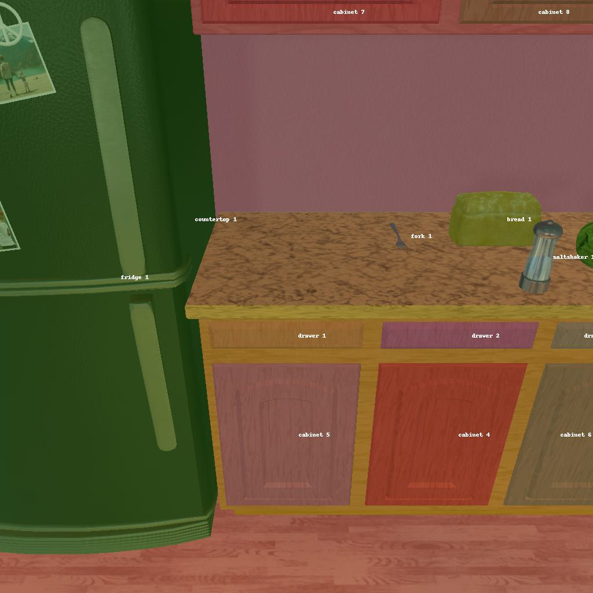

---------------------------------------------------------task: 15---------------------------------------------------------
--------------------------------------------------------------------------------------------------------------------------------------------------------------------
--------------------------------------------------------------------------------------------------------------------------------------------------------------------
Step:--------------------------------------------------------------------------7-------------------------------------------------------------------------------
----------------------------------------
VLM Prompt:
Image1:
Image2:
Image3:
**Instruction**
1. Analyze the provided image to identify all visible household objects, focusing on those relevant to the task description "cool some mug and put it in coffeemachine."
2. Use the analysis of the image and the task hint "The agent must find an object of the desired type, pick it up, go to a fridge, cool the object with the fridge, then find the correct location to place it, and put it down there. The agent does not need to use the fridge button or open the fridge to cool the object, and the agent just needs to do action that is "cool the object with the fridge"." to answer the question: what is the most reasonable action in the choices for the task description "cool some mug and put it in coffeemachine"?
4. Decide and write the answer using the template: The answer is: (i): , where i is the real number. If there is no desired object in the image, search every place based on **Initial Observation** to find the object. And if no one is exactly correct, choose a similar answer.
**Initial Observation**
You are in the middle of a room. Looking quickly around you, you can see cabinet (1-15), fridge (1), countertop (1-4), drawer (1-4), microwave (1), toaster (1), coffeemachine (1), garbagecan (1), sink (1), stoveburner (1-3), sinkbasin (1)
**Answer Choices**
(1): go to cabinet 2
(2): go to cabinet 3
(3): go to fridge 1
(4): go to countertop 1
(5): go to cabinet 5
(6): go to cabinet 6
(7): go to cabinet 7
(8): go to drawer 1
(9): go to drawer 2
(10): go to cabinet 8
(11): go to drawer 3
(12): go to cabinet 9
(13): go to cabinet 10
(14): go to drawer 4
(15): go to microwave 1
(16): go to cabinet 11
(17): go to toaster 1
(18): go to cabinet 12
(19): go to cabinet 13
(20): go to cabinet 14
(21): go to cabinet 15
(22): go to countertop 2
(23): go to coffeemachine 1
(24): go to garbagecan 1
(25): go to countertop 3
(26): go to countertop 4
(27): go to sink 1
(28): go to stoveburner 1
(29): go to stoveburner 2
(30): go to stoveburner 3
(31): go to sinkbasin 1
(32): open cabinet 1
(33): close cabinet 1
(34): examine cabinet 1
**Answer**
Let's think step by step by following the instructions.
----------------------------------------
----------------------------------------
Original Response:
Firstly, we need to identify all visible household objects relevant to the task "cool some mug and put it in coffeemachine." From the images provided and initial observation, we know there is a fridge (fridge 1) and a coffeemachine (coffeemachine 1). However, we do not see any mugs in the provided images, which means we need to search every place based on the initial observation to find the mug.
Based on common household organization, mugs are usually kept in cabinets or sometimes on countertops. Since the images provided do not show a mug on the countertop, the most reasonable action would be to search the cabinets. As the cabinets closest to the coffeemachine would be the most likely location for mugs to be stored for convenience, we should start with the cabinets near the coffeemachine.
None of the cabinets near the coffeemachine are visible in the provided images, so we must choose the action that involves going to one of those cabinets to search for a mug. The provided answer choices do not specify the exact location of the cabinets in relation to the coffeemachine, but we can make an educated guess.
The most reasonable action, given the information and the task description "cool some mug and put it in coffeemachine," would be to search the cabinets closest to the coffeemachine, which are likely to be cabinet 7 or cabinet 8 as they are directly above where the coffeemachine would logically be placed based on the layout of a kitchen.
Since none of the answer choices exactly match the desired action of searching for a mug, we must choose a similar action. As cabinet 7 is visible in the images and does not contain a mug, we should choose the next closest option.
The answer is: (10): go to cabinet 8.
----------------------------------------
----------------------------------------
>>> Refine Original VLM Response and Get Pure Action: go to cabinet 8
----------------------------------------
-----------------------------------------------------------------
Running time: 18.81469225883484 seconds
Total Money: 9.25322
-----------------------------------------------------------------
-----------------------------------------------------------------
Text Observation:You arrive at loc 11. The cabinet 8 is closed.
-----------------------------------------------------------------
UNSUCCEED